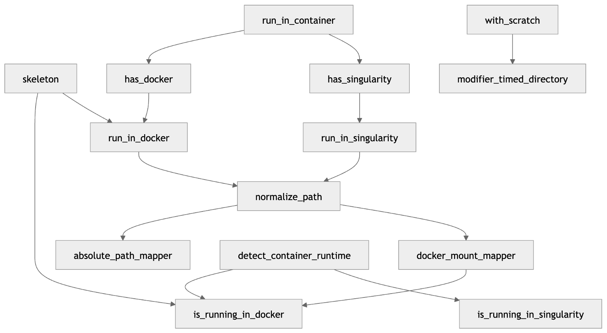
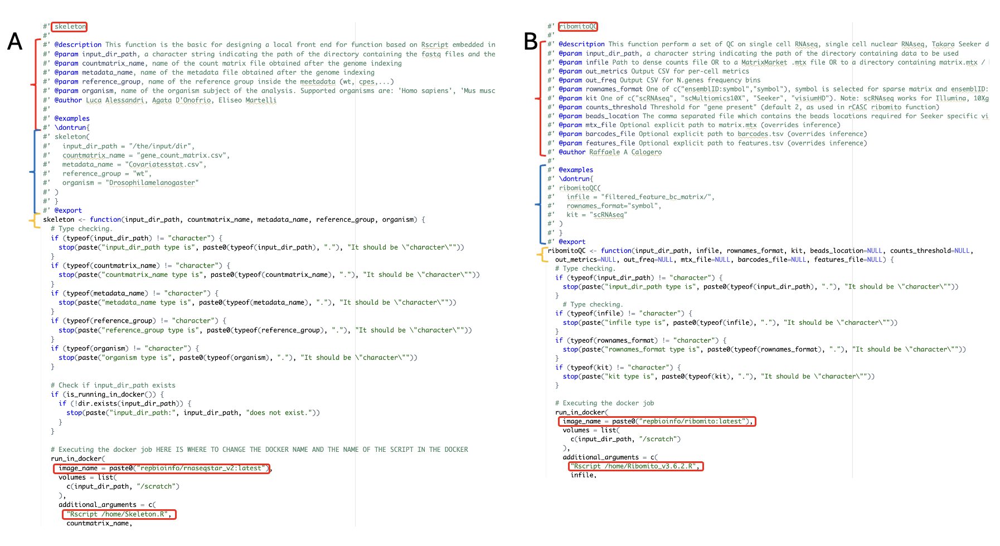
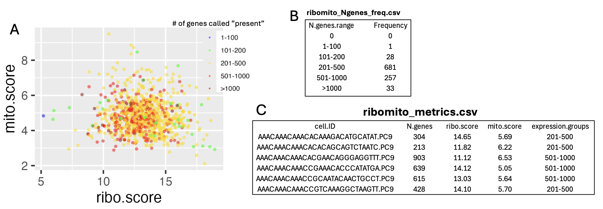
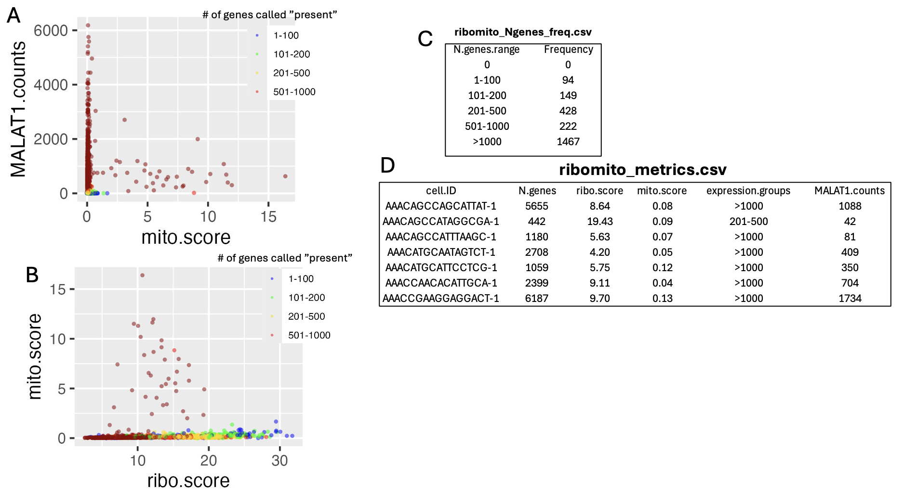
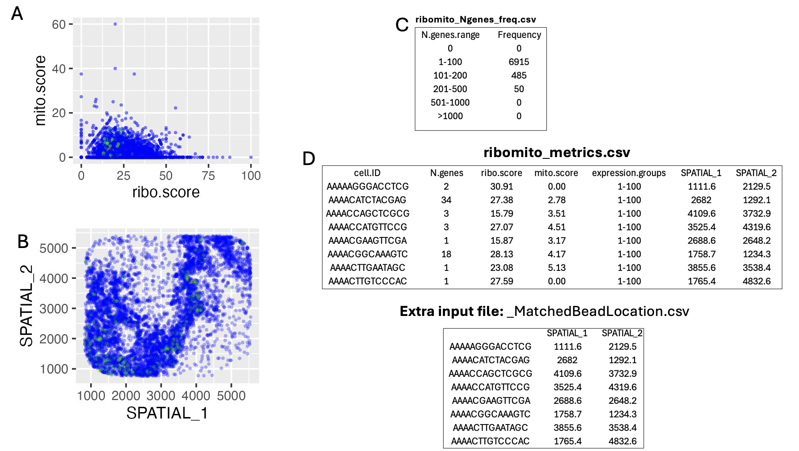
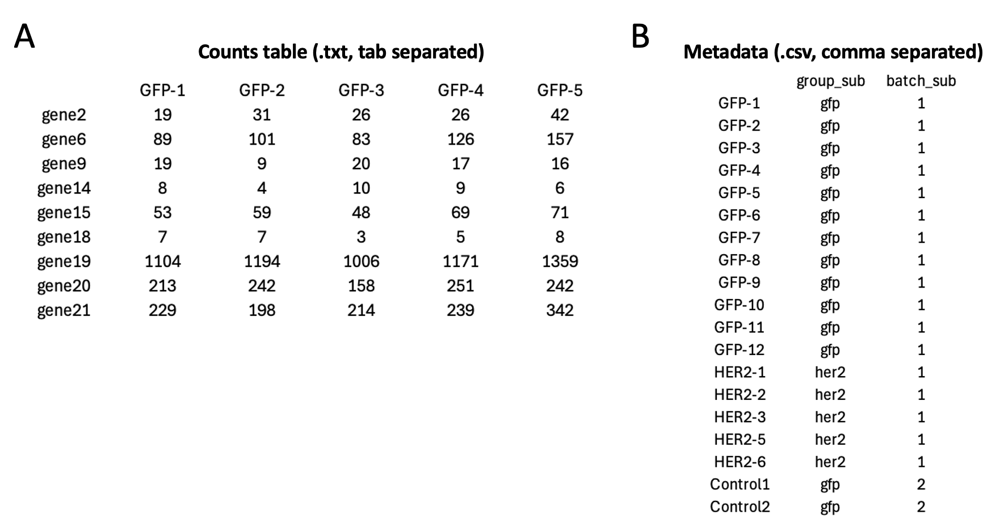
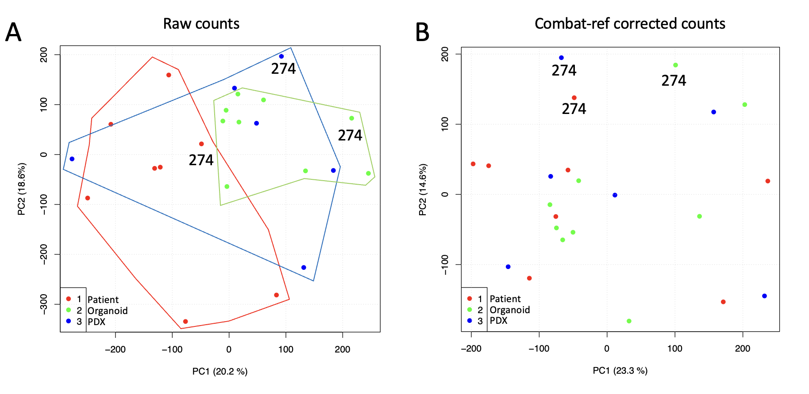

toolbox
toolbox.RmdOverview
This package is a generalised container for a variety of front-end function that execute complex workflows embedded in docker container. The package includes a set of core functions which are required to allow the front-end function to work in different environments like MAC OS, Windows and Linux. The over all structure of the front-end is shown in figure1

The package contains also a very simple skeleton function that can be used as template for the creation of a new function. the elements to be modified in the skeleton are shown in figure 2,
Panel A show the skeleton and panel B the modifications made in the ribomito_qc function. IMPORTANT: The input-dir_path in sketelon function must not be removed! It refer to the folder where the data are located in your computer and this folder will be mount as /scratch in the docker container. Here, instead you can find the header of the R script present in the repbioinfo/ribomito docker container.
#!/usr/bin/env Rscript
library(data.table)
library(Matrix)
library(ggplot2)
# versione 3.1 mat_dgC <- as(mat_dgC, "dgCMatrix") was changed in mat_dgC <- as(mat_dgC, "CsparseMatrix"), since dgCMatrix is deprecated
# expression binning was inserted in the in the output file
...
#Version 3.6 support visium HD spatial transcriptomics output: embedding bc2cellid function, see below
setwd("/scratch")
args <- commandArgs(trailingOnly = TRUE)
if (length(args) < 1) {
stop("Usage: Rscript Ribomito_v3.6.2.R <infile> <rownames_format> <kit> [beads_location] [counts_threshold] [out_metrics] [out_freq] [mtx_file] [barcodes_file] [features_file]")
}
infile <- ifelse(length(args) >= 1, args[1])
rownames_format <- ifelse(length(args) >= 2, args[2], "symbol")
kit <- ifelse(length(args) >= 3, args[3], "scRNAseq")
beads_location <- if (length(args) >= 4) args[4] else NULL
counts_threshold <- ifelse(length(args) >= 5, as.numeric(args[5]), 2)
out_metrics <- ifelse(length(args) >= 6, args[6], "ribomito_metrics.csv")
out_freq <- ifelse(length(args) >= 7, args[7], "ribomito_freq.csv")
mtx_file <- if (length(args) >= 8) args[8] else NULL
barcodes_file <- if (length(args) >= 9) args[9] else NULL
features_file <- if (length(args) >= 10) args[10] else NULL
#' ribomito_qc
#'
#' Compute per-cell QC metrics: N.genes (counts > 2), ribo.score (%), mito.score (%)
#' Supports:
...
ribomito_qc <- function(infile,
rownames_format = c("ensemblID:symbol", "symbol"),
kit = c("scRNAseq", "scMultiomics10X", "Seeker", "visiumHD"),
beads_location = NULL,
counts_threshold = 2,
out_metrics = "ribomito_metrics.csv",
out_freq = "ribomito_Ngenes_freq.csv",
mtx_file = NULL,
barcodes_file = NULL,
features_file = NULL) {
...
}
ribomito_qc(infile=infile, rownames_format=rownames_format, kit=kit, beads_location=beads_location, out_metrics=out_metrics, out_freq=out_freq,
mtx_file=mtx_file, barcodes_file=barcodes_file, features_file=features_file, counts_threshold=counts_threshold)As you can see the parameters provided by the front-end function will be passed to this script and the script will take care of executing the code requested for the analysis.
Implemented tools
ribomitoQC
This function is an evolution of the mitoRiboUmi function available in the [rCASC package]. The current implementation extends the functionality of the original function to sparse matrices and provides additional QC information for several single-cell platforms, including: 10x Genomics/Illumina single-cell RNA-seq (dense and sparse matrices), 10x Genomics single-nucleus RNA-seq (sparse matrices), Takara Seeker spatial transcriptomics (dense comma-separated matrices), and 10x Genomics Visium HD (sparse matrices). Support for the latter is still under development and requires further refinement. An example dataset for testing ribomitoQC is available on [Zenodo].
Figure 3, shows the output for scRNA-seq data generated with the 10x Genomics/Illumina single-cell RNA-seq platform.

Panel A reports the percentage of counts associated with mitochondrial proteins plotted against the percentage of counts associated with ribosomal proteins. Each dot represents a cell and is colored according to the number of detected genes. In this case, we used the threshold defined in the [rCASC paper] paper, where more than 2 UMIs are required for a gene to be considered detected. Panel B shows the frequency distribution of cells across ranges of detected genes. Panel C provides the data used to generate the plot shown in Panel A.
Figure 4 shows the output for single-nucleus RNA-seq data generated with the 10x Genomics platform.

Panel A shows MALAT1 long non-coding RNA expression plotted against the percentage of mitochondrial gene counts. MALAT1 appears to be a marker of good cell quality when associated with low mitochondrial contamination. Panel B reports the percentage of counts associated with mitochondrial proteins plotted against the percentage associated with ribosomal proteins. Each dot represents a cell and is colored according to the number of detected genes. Also in this case, we used the threshold defined in the [rCASC paper] paper, where more than 2 UMIs are required to call a gene as detected. Panel C shows the frequency distribution of cells across ranges of detected genes. Panel D provides the data used to generate the plots shown in Panels A and B.
Figure 5 shows the output for Takara Seeker spatial transcriptomics data.

Panel A reports the percentage of counts associated with mitochondrial proteins plotted against the percentage associated with ribosomal proteins. Each dot represents a cell and is colored according to the number of detected genes. As above, we used the threshold defined in the rCASC paper paper, where more than 2 UMIs are required for a gene to be considered detected. Panel B shows the same data mapped according to tissue location. Panel C shows the frequency distribution of cells across ranges of detected genes. Panel D provides the data used to generate the plots shown in Panels A and B. To generate this output, the input must also include a file describing the spatial location of each barcode.combatRef
This function is the front end to the Combat-ref published by Zhang 2024. Thsi batch effect correction method enhances the statistical power and reliability of differential expression analysis in RNA-seq data. It is built on the foundations of ComBat-seq, and employs a negative binomial model to adjust count data but innovates by using a pooled dispersion parameter for entire batches and preserving count data for the reference batch.
In figure 6, it is shown the structure of the input files. In panel A it is shown the tab separated count table and in panel B the metadata which is saved in a comma separated file. Please not that column names in counts tabla and rownames in metadata table must be co-linear.

In Figure 7 it is shown the effect of Combat-ref adjustment on GSE119004 dataset. This dataset was generated by Shi et al.. Specifically they provide RNAseq from PDX, organoids and patient RNA. Panel A shows the batches referred to the uncorrected samples. Panel B show the same data after batch correction. It is notable that PDXs and organoids better aggregate with the corresponding patient after batch correction. For semplicity only patient 274 is shown
